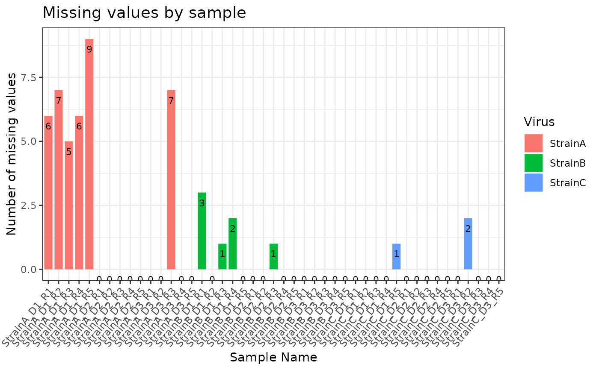
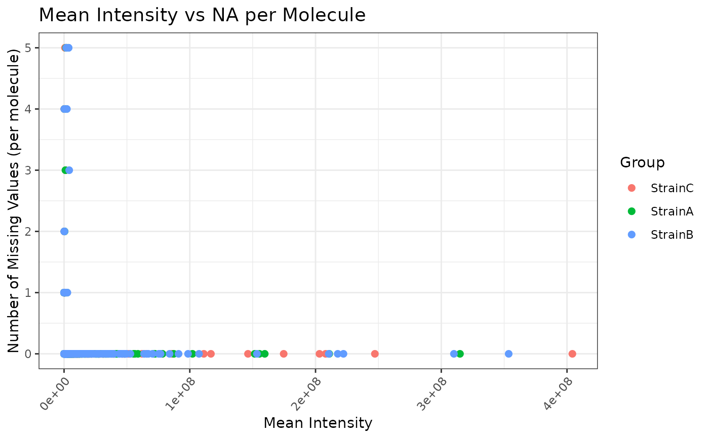
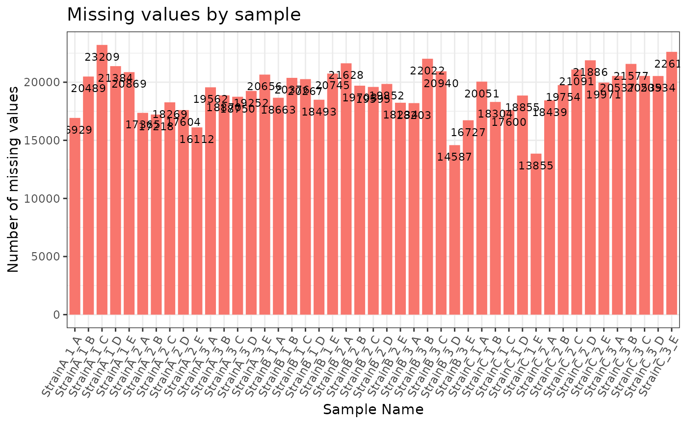

For plotting an S3 object of type 'naRes'
# S3 method for naRes
plot(
naRes_obj,
omicsData,
plot_type = "bar",
nonmissing = FALSE,
proportion = FALSE,
order_by = NULL,
color_by = NULL,
interactive = FALSE,
x_lab_bar = NULL,
x_lab_scatter = NULL,
y_lab_bar = NULL,
y_lab_scatter = NULL,
x_lab_size = 11,
y_lab_size = 11,
x_lab_angle = 60,
title_lab_bar = NULL,
title_lab_scatter = NULL,
title_lab_size = 14,
legend_lab_bar = NULL,
legend_lab_scatter = NULL,
legend_position = "right",
point_size = 2,
text_size = 3,
bar_width = 0.8,
bw_theme = TRUE,
palette = NULL,
display_count = TRUE,
coordinate_flip = FALSE,
use_VizSampNames = FALSE
)list of two data frames, one containing the number of missing values by sample, and the other containing missing values by molecule
object of class 'pepData', 'proData', 'metabData',
'lipidData', nmrData', or 'seqData', created by as.pepData,
as.proData, as.metabData,
as.lipidData, as.nmrData, or as.seqData, respectively.
character string specifying which type of plot to produce. The two options are 'bar' or 'scatter'.
logical value. When FALSE, plots missing values. When TRUE, plots non-missing values.
logical value. When TRUE, plots the proportion of missing
(or non-missing if nonmissing is TRUE) to the total number of
values. Only works with a plot type of 'bar'.
A character string specifying a column in f_data by which to
order the samples. Specifying "Group" will use the "Group" column of the
object's group_DF attribute to order the samples. Only works with a
plot type of 'bar'.
A character string specifying a column in f_data by which to
color the bars or the points depending on the plot_type. Specifying
"Group" will use the "Group" column of the object's group_DF
attribute to color the samples. Only works with a plot type of 'bar'.
logical value. If TRUE produces an interactive plot.
character string used for the x-axis label for the bar plot
character string used for the x-axis label for the scatter plot
character string used for the y-axis label for the bar plot
character string used for the y-axis label for the scatter plot
integer value indicating the font size for the x-axis. The default is 11.
integer value indicating the font size for the y-axis. The default is 11.
integer value indicating the angle of x-axis labels.
character string used for the plot title when
plot_type is 'bar'.
character string used for the plot title when
plot_type is 'scatter'.
integer value indicating the font size of the plot title. The default is 14.
character string specifying the legend title when creating a bar plot.
character string specifying the legend title when creating a scatter plot.
character string specifying the position of the legend. Can be one of "right", "left", "top", or "bottom". The default is "right".
An integer specifying the size of the points. The default is 2.
An integer specifying the size of the text (number of missing values by sample) within the bar plot. The default is 3.
An integer indicating the width of the bars in the bar plot. The default is 0.8.
logical value. If TRUE uses the ggplot2 black and white theme.
character string indicating the name of the RColorBrewer
palette to use. For a list of available options see the details section in
RColorBrewer.
logical value. Indicates whether the missing value counts by sample will be displayed on the bar plot. The default is TRUE.
logical value. Indicates whether the x and y axes will be flipped. The default is FALSE.
logical value. Indicates whether to use custom sample names. The default is FALSE.
ggplot2 plot object if interactive is FALSE, or plotly plot object if interactive is TRUE
This function takes in an object of class naRes and creates either a
bar or scatter plot of missing values. When plot_type = 'bar', a sample
name by missing values count bar chart is returned. When plot_type =
'scatter' a mean intensity vs number of missing values (per molecule)
scatter plot is returned. Note: If the omicsData object has had
group_designation applied to it, the points in the plot will
be colored by group.
library(pmartRdata)
mylipid <- group_designation(omicsData = lipid_neg_object, main_effects = "Virus")
result <- missingval_result(omicsData = mylipid)
plot(naRes_obj = result, omicsData = mylipid, plot_type = "bar", x_lab_angle = 50, order_by = "Virus", color_by = "Virus")

plot(naRes_obj = result, omicsData = mylipid, plot_type = "scatter", x_lab_angle = 50, color_by = "Virus")

result <- missingval_result(omicsData = rnaseq_object)
plot(naRes_obj = result, omicsData = rnaseq_object, plot_type = "bar")
